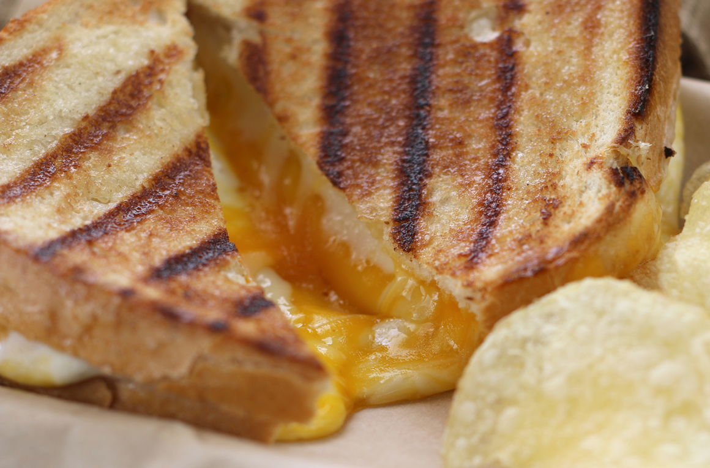

Grilled Cheese
Description
The History of Grilled Cheese
From Freshmelt.com According to food historians, mankind has paired bread with cheese for centuries. Even ancient Roman cookbooks advised combining bread and cheese at mealtimes! Cooking bread and cheese together, however, is a more recent phenomenon. Although no one can pinpoint the precise origin of grilled cheese, the sandwich became very popular in the 1920s. That's when scholars speculate some enterprising individual came up with the idea to make a grilled cheese sandwich, but the idea quickly spread commercially as well as in the home. With the huge increase in restaurant dining in the 1920s, inexpensive loaves of bread and processed cheese acted as a catalyst for public consumption of grilled cheese. In fact, by the time the Great Depression struck, grilled cheese sandwiches were a staple of the American diet. In its earliest form, a grilled cheese sandwich was made open faced with grated American cheese. Popular toppings included tomatoes, eggs, pineapple, and bacon. Eventually, people began closing the sandwich with a second piece of bread - mainly to make the meal a more filling one. Poor Americans in the 1930s could usually afford an inexpensive grilled cheese sandwich, which provided enough nutrition to get them back to work. During World War II, the grilled cheese sandwich was a particular favorite of the Allied Armed Forces. Therefore, it wasn't long before school cafeterias and housewives made grilled cheese a regular part of their meal planning. Today, grilled cheese is found on menus for both delis and five-star restaurants! Innovators have served it on various breads, experimented with different kinds of cheese, and even added meat into the mix. Grilled cheese still stands as kids' all-time favorite, but it is also a recognized comfort food for grownups. Pairing a grilled cheese sandwich with a bowl of tomato soup warms the bones and the heart!
ingredients
- Bread
- Cheese
Steps
- Put the Cheese on the bread
- Cook on skillet